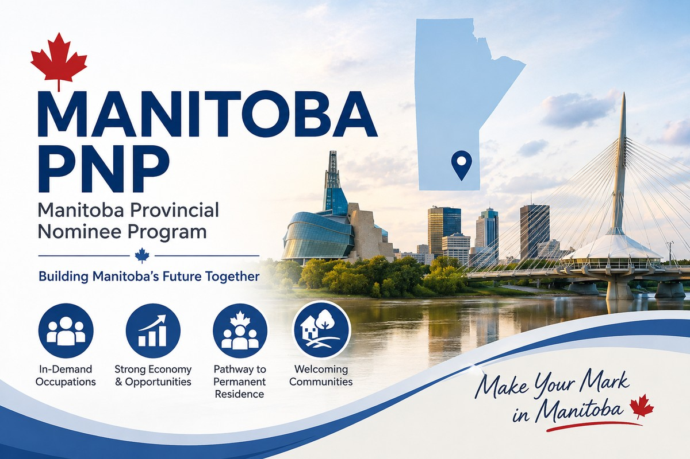

曼省最新省提名抽选发出741份邀请： 技工成为本轮重点
Read in English
曼省省提名项目 Manitoba Provincial Nominee Program（MPNP） 于2026年8月27日进行了新一轮 Expression of Interest（EOI）抽选， 共发出 741份Letters of Advice to Apply（LAA）。
本轮抽选明显体现出Manitoba 针对特定劳动力市场需求 进行定向选择的趋势。
本轮741份邀请如何分配？
| 类别 / 选择方向 | 邀请数量 |
|---|---|
| NOC Major Group 72 技工职业 | 600 |
| 指定职业申请人 | 62 |
| 法语申请人 | 21 |
| Strategic Recruitment Initiative | 58 |
本轮最大的一组邀请来自 NOC Major Group 72。
共发出 600份邀请， 最低EOI分数为 731分。
本轮最大看点：600个名额集中给技术工种
本轮真正值得关注的， 并不仅仅是741这个总邀请人数。
更重要的是， 其中600份邀请集中在 NOC Major Group 72 – Skilled Trades。
这说明Manitoba目前仍然在通过 省提名项目主动解决 具体行业和职业的劳动力需求。
换句话说， 省政府并不是简单按照 所有候选人的EOI总分从高到低 进行普遍邀请。
最低EOI分数731分，但分数不是唯一因素
NOC Major Group 72 本轮最低EOI分数为731分。
但对于考虑Manitoba省提名的申请人来说， 仅仅关注这个分数是不够的。
本轮抽选本身已经说明， 申请人的职业是否属于 Manitoba当前重点选择范围， 可能直接影响获得邀请的机会。
对MPNP申请人而言， EOI分数仍然重要， 但现在越来越需要同时考虑： 职业、行业及当前省级选择重点。
医疗、交通和法语申请人也获得定向机会
除了600名技术工种申请人以外， Manitoba本轮还向 62名指定职业申请人 发出邀请。
这些指定职业包括 家庭医生 以及 公共交通运营相关职业。
此外， 还有21份邀请发给法语申请人。
这说明除了技术工种以外， 医疗、交通及法语能力 仍然可能成为Manitoba 定向选择中的重要因素。
Strategic Recruitment Initiative发出58份邀请
本轮另有 58份邀请 通过Strategic Recruitment Initiative发出。
这类定向招聘机制 也是Manitoba连接 省级劳动力市场需求 与移民选择的重要方式之一。
150名获邀申请人同时拥有Express Entry Profile
在本轮全部741名获邀申请人中， 有150人 同时拥有有效的联邦Express Entry Profile 及Job Seeker Validation Code。
这也说明， 对部分符合条件的申请人来说， Manitoba省提名与联邦Express Entry 可能存在衔接机会。
Manitoba的选择正在越来越精准
本轮抽选再次体现了 加拿大省提名项目近年来越来越明显的趋势：
省提名正在从过去相对广泛的技术移民选择， 逐渐转向更加精准的 劳动力市场定向选择。
对Manitoba申请人而言， 未来不能只问： “我的EOI是多少分？”
更重要的问题还包括：
- 我的职业是否属于Manitoba当前重点职业？
- 我的工作背景是否符合省级劳动力市场需求？
- 我是否属于法语、医疗、技工 或其他正在定向选择的申请群体？
- 是否存在Strategic Recruitment 或Express Entry衔接机会？
因此， 对Manitoba PNP的评估 不应该只停留在EOI分数， 还需要结合申请人的职业、 工作背景及当前抽选趋势一起判断。
Manitoba PNP Issues 741 Invitations: Skilled Trades Dominate the Latest Draw
The Manitoba Provincial Nominee Program (MPNP) conducted a new Expression of Interest draw on August 27, 2026, issuing a total of 741 Letters of Advice to Apply (LAAs).
The draw clearly reflected Manitoba’s continued focus on specific labour market needs.
How Were the 741 Invitations Distributed?
| Selection Category | Invitations |
|---|---|
| NOC Major Group 72 Skilled Trades | 600 |
| Specified Occupations | 62 |
| French-speaking Candidates | 21 |
| Strategic Recruitment Initiatives | 58 |
600 invitations were issued to candidates in occupations under NOC Major Group 72.
The minimum EOI score for this group was 731.
Skilled Trades Were the Main Focus
The most significant feature of this draw was not simply the total of 741 invitations.
It was the fact that 600 invitations were concentrated in NOC Major Group 72.
This demonstrates how Manitoba is increasingly using its provincial nominee allocation to address specific labour market needs rather than simply inviting candidates based on their overall EOI scores.
The Minimum EOI Score Was 731, but the Score Is Not the Only Factor
Candidates selected under NOC Major Group 72 had a minimum EOI score of 731.
For applicants considering Manitoba immigration, however, the EOI score remains important but is no longer the only factor to watch.
An applicant’s occupation and whether it falls within Manitoba’s current selection priorities can have a significant impact on the likelihood of receiving an invitation.
Healthcare, Transportation and French-speaking Candidates Also Received Targeted Opportunities
Manitoba also issued 62 invitations to candidates in specified occupations, including family physicians and public transportation-related occupations.
Another 21 invitations were issued to French-speaking candidates.
These selections show that skilled trades were not the province’s only priority.
French-speaking applicants and candidates in certain healthcare and transportation occupations continued to receive targeted opportunities.
Strategic Recruitment Initiatives
Manitoba issued another 58 invitations through Strategic Recruitment Initiatives.
These initiatives continue to provide another targeted pathway through which Manitoba can respond to specific provincial labour market needs.
150 Candidates Had Valid Express Entry Profiles
Of the 741 candidates invited, 150 had a valid Express Entry profile and Job Seeker Validation Code.
For some eligible applicants, Manitoba provincial nomination may therefore intersect with the federal Express Entry system.
Manitoba’s Selection Is Becoming More Targeted
This draw reflects a broader trend across Canada’s Provincial Nominee Programs.
Provincial selection is becoming increasingly targeted toward specific occupations and provincial labour market needs.
For Manitoba applicants, this means that assessing an immigration strategy should go beyond the EOI score alone.
Occupation, employment background, language ability, provincial priorities and access to targeted recruitment opportunities may all influence an applicant’s prospects.